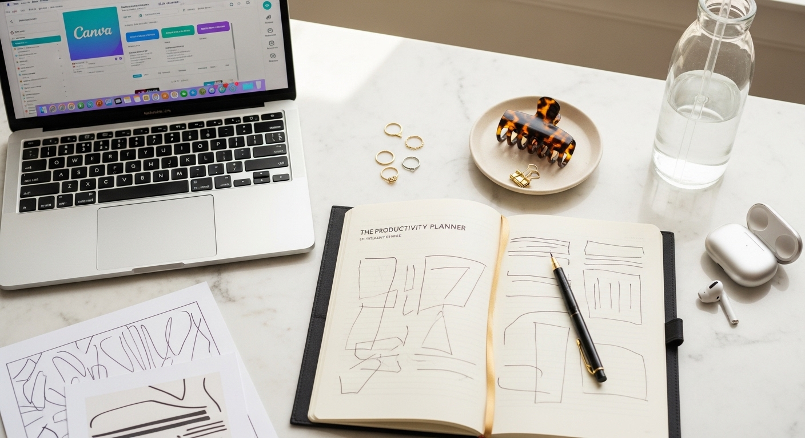

starting a business tips

STARTING A BUSINESS TIPS THAT ACTUALLY WORK (FROM SOMEONE WHO'S DONE IT)
You have the idea. Maybe you've had it for months. You know what you want to sell, who you want to help, and you can picture the business in your head.
But every time you sit down to actually start, you end up with fifteen browser tabs open, a half-finished Canva logo, and a growing sense that everyone else figured this out faster than you.
Here's the truth about starting a business tips you'll find online: most of them are written by people who haven't built anything recently. They'll tell you to write a 40-page business plan, register seventeen accounts, and "validate your idea" in ways that feel more like procrastination than progress.
I've been running my own business for over a decade. I've made 27,700+ sales. I've also made every mistake you can think of - scattered branding, no email list, saying yes to everyone and ending up with nothing clear to show for it.
These are the tips I wish someone had handed me on day one. No fluff. No theory that doesn't translate to actual results. Just what works.
THE FIRST TIP EVERYONE IGNORES: GET SPECIFIC ABOUT WHO YOU SERVE
My first year, I designed everything. Wedding invitations, recipe cards, birthday party packs, café menus. If someone needed it, I made it.
By the end of that year, I had a scattered portfolio and no clear direction. Worse - I had no recognizable brand. People couldn't refer me because they didn't know what I actually did.
The shift came when I stopped designing for everyone and focused entirely on small business owners and service providers.
Suddenly the right people started finding me. My messaging made sense. My products sold faster because they spoke directly to a specific problem.
Who exactly are you trying to help?
Not "anyone who needs X." A real person with a real problem. A life coach who's great at what she does but has no idea how to look professional online. A therapist starting a private practice who needs a website that doesn't look like a 2010 template.
The more specific you are about who you serve, the easier it is for them to find you - and trust you immediately.
LOOKING PROFESSIONAL ISN'T OPTIONAL (AND IT DOESN'T REQUIRE A HUGE BUDGET)
I see this constantly: businesses operating for years with a Canva logo made in twenty minutes, three different fonts across their platforms, and colors that don't quite match anywhere.
It looks unintentional. And unintentional branding erodes trust before a customer even reaches out.
You don't need to spend thousands on a designer. You need:
- A clear logo that works at any size
- A small set of brand colors (2-4 is plenty)
- Two or three fonts used consistently
- A style that looks the same across your website, social media, and emails
When everything matches, you look established - even if you launched last week.
This is one of the most overlooked starting a business tips, and it's one of the easiest to fix. Professional branding makes people trust you faster. It makes them more likely to buy. It makes them feel confident referring you to someone else.
If you want this done for you, the [Switzertemplates 3-in-1 bundle](https://switzertemplates.com) includes a full branding kit, a Wix website, and a Canva landing page - everything matches, and you can customize it in an afternoon.
YOUR WEBSITE MATTERS MORE THAN YOUR INSTAGRAM FOLLOWING
Social media is rented land. The algorithm changes, reach drops, platforms come and go.
Your website is the one place online you actually own - and it works for you 24/7.
Think about the last time you wanted to hire someone or buy something from a small business.
Did you scroll through their Instagram grid and immediately hand over your credit card? Or did you click the link in their bio, look at their website, and then decide whether they seemed legitimate?
Your website is where trust happens. It's where people go to confirm that you're real, that you know what you're doing, and that you're worth their money.
You don't need something elaborate. A clear homepage, a services or product page, and a way to get in touch - that's enough to build real credibility.
What you do need is something that:
- Loads fast on mobile (most people will find you on their phone)
- Has one clear call to action per page
- Looks consistent with your branding everywhere else
- Doesn't make visitors work to figure out what you do
If someone lands on your site and doesn't immediately know where to go or what to do - they leave.
START YOUR EMAIL LIST BEFORE YOU THINK YOU'RE READY
I spent two years growing my Etsy shop before I ever thought seriously about email.
Then one month, reach dropped significantly and I had no backup. If I'd had an email list, I could have reached my customers directly and kept making sales.
Your email list is the only audience you truly own.
You don't need thousands of subscribers. Even 200 engaged people who actually open your emails will drive more results than thousands of passive social media followers who never see your posts.
Here's what I'd do differently if I started again:
- Create one simple freebie that solves a real problem for my ideal customer
- Set up an email platform (Flodesk makes this simple)
- Start collecting emails from day one - not "once I have more to offer"
- Send something useful at least twice a month, consistently
What could you give away that would make someone think "this person really knows their stuff"?
A checklist. A mini guide. A template. Something that takes them from stuck to unstuck in one specific area.
That one freebie becomes the start of a relationship. And relationships turn into sales.
DON'T BUILD EVERYTHING FROM SCRATCH
One of the best starting a business tips I can give you: stop trying to create everything yourself.
When I started, I thought I had to design every template, write every piece of copy, build every page from nothing. It took forever. I burned out. And half of what I made wasn't even that good because I was spread so thin.
The businesses that grow fastest are the ones that use existing resources well.
- Use templates for your branding instead of staring at a blank Canva canvas
- Use a pre-built website instead of spending six months "learning web design"
- Use proven frameworks for your content instead of reinventing the wheel every post
This doesn't mean your business looks generic. It means you start with a solid foundation and customize it to fit your brand - instead of building the foundation yourself while your competitors are already selling.
The goal is to look professional and get to market fast. Not to prove you can do everything alone.
CONSISTENCY BEATS PERFECTION EVERY TIME
Here's what nobody tells you about the first year of business: most of it is boring.
You'll post content and hear crickets. You'll send emails to a tiny list. You'll wonder if anyone is paying attention.
This is the season most people quit.
The ones who make it aren't the ones with the best ideas or the biggest budgets. They're the ones who kept showing up when nothing was working yet.
Boring consistency is your advantage.
- Post regularly, even when engagement is low
- Email your list, even when it's small
- Keep improving your offers, even when sales are slow
- Show up as if people are watching - because eventually they will be
Growth is mostly invisible before it's obvious. The work you're putting in is compounding underneath the surface, even when it doesn't look like it yet.
MAKE IT EASY TO BUY FROM YOU
I've seen businesses with great products and terrible buying experiences.
Their website doesn't explain what they sell clearly. Their pricing is hidden. The checkout process is confusing. Their call to action says "learn more" instead of telling people exactly what to do.
Every extra step between "I'm interested" and "I bought it" is a chance for someone to leave.
Audit your own buying process:
Can someone figure out what you sell within five seconds of landing on your site?
Is your pricing clear and easy to find?
Does your call to action tell people exactly what they get when they click?
"Get the 3-in-1 branding bundle" works. "Click here" doesn't.
WHAT TO DO THIS WEEK
You don't need to implement everything at once. That's a recipe for overwhelm and another month of nothing getting done.
Pick one thing from this list and finish it this week:
- Write down exactly who your ideal customer is - one specific person with a specific problem
- Audit your branding - does everything match across platforms?
- Set up a simple website with one clear call to action
- Create your first email opt-in and start collecting addresses
- Look at your buying process - how many clicks does it take to purchase?
One thing. Done properly. That's how businesses actually get built.
The best starting a business tips aren't complicated. They're just the ones that actually get implemented.
If you want to skip months of DIY branding and website building, check out the [Switzertemplates Etsy shop](https://switzertemplates.etsy.com) - everything from branding kits to full Wix websites, ready to customize and launch. 📥
Xo Jane
Let me know in the comments below if you want me to cover any branding or marketing topics in more depth, and I'll make sure to create a blog post about it in the future.